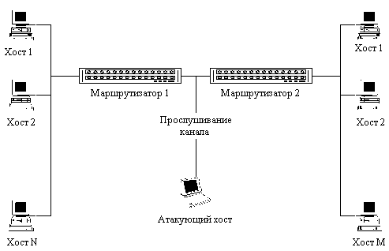

|
4.1. Анализ сетевого трафика сети Internet
В сети Internet основными базовыми протоколами
удаленного доступа являются TELNET и FTP (File Transfer
Protocol). TELNET - это протокол виртуального терминала
(ВТ), позволяющий с удаленных хостов подключаться
к серверам Internet в режиме ВТ. FTP - протокол,
предназначенный для передачи файлов между
удаленными хостами. Для получения доступа к
серверу по данным протоколам пользователю
необходимо пройти на нем процедуру
идентификации и аутентификации. В качестве
информации, идентифицирующей пользователя,
выступает его идентификатор (имя), а для
аутентификации используется пароль.
Особенностью протоколов FTP и TELNET является то, что
пароли и идентификаторы пользователей
передаются по сети в открытом, незашифрованном
виде. Таким образом, необходимым и достаточным
условием для получения удаленного доступа к
хостам по протоколам FTP и TELNET являются имя и
пароль пользователя.
Одним из способов получения паролей и
идентификаторов пользователей в сети Internet
является анализ сетевого трафика. Сетевой анализ
осуществляется с помощью специальной
пpогpаммы-анализатоpа пакетов, перехватывающей
все пакеты, передаваемые по сегменту сети, и
выделяющей среди них те, в которых передаются
идентификатоp пользователя и его паpоль. Сетевой
анализ протоколов FTP и TELNET показывает, что TELNET
разбивает пароль на символы и пересылает их по
одному, помещая каждый символ из пароля в
соответствующий пакет, а FTP, напротив, пересылает
пароль целиком в одном пакете.
У внимательного читателя, наверное, уже возник
вопрос, почему разработчики базовых прикладных
протоколов Internet не предусмотрели возможностей
шифрования передаваемых по сети паролей
пользователей. Даже во всеми критикуемой сетевой
ОС Novell NetWare 3.12 пароли пользователей никогда не
передаются в открытом виде по сети (правда, этой
ОС это особенно не помогает - [9]). Видимо, проблема
в том, что базовые прикладные протоколы
семейства TCP/IP разрабатывались очень давно - в
период с конца 60-х до начала 80-х и c тех пор
абсолютно не изменились. При этом точка зрения на
построение глобальных сетей стала иной.
Инфраструктура сети Internet и ее протоколы
разрабатывались в основном из соображений
надежности связи и уж никак не из соображений
безопасности. Мы - пользователи сети Internet - сейчас
пожинаем плоды, оставленные нам разработчиками
этой морально устаревшей с точки зрения
безопасности глобальной сети. Совершенно
очевидно, что вычислительные системы за эти годы
сделали колоссальный скачок в своем развитии.
Поэтому, конечно, за эти годы подход к
обеспечению информационной безопасности
распределенных ВС существенно изменился. Были
разработаны различные протоколы обмена,
позволяющие защитить сетевое соединение и
зашифровать трафик (например, протоколы SSL, SKIP и т.
п.). Однако эти протоколы не сменили устаревшие и
не стали стандартом для каждого пользователя
(может быть, за исключением SSL). Вся проблема
состоит в том, что для того, чтобы они стали
стандартом, на эти протоколы должны перейти все
пользователи сети, но, так как в Internet отсутствует
централизованное управление сетью, то процесс
перехода на эти протоколы может длиться еще
многие годы. А на сегодняшний день подавляющее
большинство пользователей используют
стандартные протоколы семейства TCP/IP,
разработанные более 15 лет назад. В результате,
как показывают сообщения амеpиканских центpов по
компьютеpной безопасности (CERT, CIAC), анализ
сетевого трафика в сети Internet успешно пpименялся
кракерами в последние годы, и, согласно
матеpиалам специального комитета пpи конгpессе
США, с его помощью в 1993-1994 годах было пеpе-хвачено
около миллиона паpолей для доступа в
различные информационные системы.

Рис. 4.1. Анализ сетевого трафика.
|